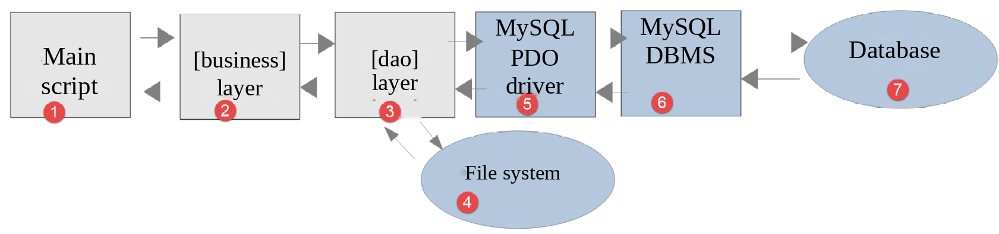

13. Praktische Übung – Version 5
Wir haben bereits mehrere Versionen dieser Übung geschrieben. Die letzte Version verwendete eine Schichtenarchitektur:

Die Schicht [dao] implementiert die Schnittstelle [InterfaceDao]. Wir haben eine Klasse erstellt, die diese Schnittstelle implementiert:
- [DaoTaxWithTaxAdminDataInJsonFile], die die Steuerdaten aus einer JSON-Datei abrief.
Wir implementieren die Schnittstelle [InterfaceDao] mit einer neuen Klasse, [DaoTaxWithTaxAdminDataInDatabase], die die Daten der Steuerverwaltung aus einer MySQL-Datenbank abruft.
13.1. Die Datenbank [dbtaxes-2019] erstellen
Nach dem Beispiel des vorherigen Kapitels erstellen wir eine MySQL-Datenbank namens [dbtaxes-2019], die dem Benutzer [admtaxes] mit dem Passwort [pwdtaxes] gehört. Diese Datenbank enthält zwei Tabellen:
- die Tabelle [tbbrackets] enthält die Steuerstufen;
- die Tabelle [tbconstants] enthält die bei der Steuerberechnung verwendeten Konstanten.
Der PHP-7-Kurs erstellte die Datenbank, den Benutzer und die Tabellen mit dem Assistenten von [phpMyAdmin] und exportierte die entstandene Struktur anschließend in eine SQL-Datei. Wir gehen umgekehrt vor: Wir schreiben das SQL-Skript [dbtaxes-2019.sql] direkt und legen es im Ordner [Data] von Version 5 ab:
Kommentare
- Zeile 7: Die Datenbank [dbtaxes-2019] wird gelöscht, falls sie existiert. Das Skript kann dann erneut ausgeführt werden, um die Datenbank neu zu erzeugen, falls sie gelöscht oder beschädigt wurde. Der Datenbankname enthält einen Bindestrich: Er muss in Backquotes ` eingeschlossen werden, damit MySQL ihn nicht als Subtraktion interpretiert;
- Zeile 8: Die Datenbank wird mit dem Zeichensatz [utf8mb4] erstellt;
- Zeilen 11–13: Der Benutzer [admtaxes], mit dem Passwort [pwdtaxes], wird (neu) angelegt. Dieser Benutzer hat alle Rechte an der Datenbank [dbtaxes-2019];
- Zeile 16: Die folgenden Befehle beziehen sich auf die Datenbank [dbtaxes-2019];
- Zeilen 19–25: Die Tabelle [tbbrackets] hat vier Spalten:
- [id] ist eine ganze Zahl, der Primärschlüssel der Tabelle, und wird vom DBMS automatisch hochgezählt ([AUTO_INCREMENT]). Das bedeutet, dass MySQL die Werte des Primärschlüssels beim Einfügen selbst verwaltet: Es weist dem Primärschlüssel der ersten Einfügung den Wert 1 zu, der nächsten den Wert 2 und so weiter;
- [limits] ist eine 10-stellige Dezimalzahl mit 2 Nachkommastellen ([DECIMAL(10, 2)]). Sie enthält die Elemente der Spalte [limits] der Steuerstufen;
- [coeffr] ist eine 6-stellige Dezimalzahl mit 2 Nachkommastellen. Sie enthält die Elemente der Spalte [coeffR] der Steuerstufen;
- [coeffn] ist eine 10-stellige Dezimalzahl mit 2 Nachkommastellen. Sie enthält die Elemente der Spalte [coeffN] der Steuerstufen;
- Zeilen 28–41: Die Tabelle [tbconstants] hat einen Primärschlüssel [id] und pro Konstante der Steuerberechnung eine Dezimalspalte. Sie enthält nur eine einzige Zeile.
Der Typ [DECIMAL] speichert Zahlen exakt, im Gegensatz zu den Gleitkommatypen [FLOAT] und [DOUBLE], die einen binär angenäherten Wert speichern: 0.14 wird exakt als 0.14 gespeichert.
Führen Sie dieses Skript im [Laragon]-Terminal aus, das im Ordner [version-05/Data] geöffnet ist, und zwar mit dem Befehl:
Wenn alles gut geht, wird nichts angezeigt. Überprüfen Sie das Ergebnis, indem Sie sich als [admtaxes] anmelden:
- Zeile 6: Die Spalte [id] ist der Primärschlüssel (PRI), und ihre Werte werden von MySQL verwaltet (auto_increment).
Natürlich können Sie das Skript [dbtaxes-2019.sql] auch in [HeidiSQL] oder [phpMyAdmin] öffnen und ausführen, um dort die Tabellenstruktur zu betrachten.
13.2. Code-Organisation
Um die Rolle der verschiedenen PHP-Skripte, die wir schreiben, besser zu veranschaulichen, organisieren wir den Code von Version 5 in Ordnern:
- [Entities]: die Entitäten der Anwendung, also die zwischen den Schichten ausgetauschten Objekte;
- [Utilities]: Hilfsklassen der Anwendung;
- [Data]: die von der Anwendung verwendeten oder erzeugten Daten sowie das SQL-Datenbankskript. Hier haben wir uns entschieden, für Textdateien ausschließlich JSON-Dateien zu verwenden. Diese bieten mehrere Vorteile:
- sie werden von vielen Werkzeugen erkannt;
- diese Werkzeuge unterstützen die Syntaxhervorhebung. Außerdem folgt die JSON-Notation bestimmten Regeln. Werden diese Regeln nicht eingehalten, melden die Werkzeuge den Fehler. Ein Fehler, der in einer einfachen Textdatei schwer zu erkennen ist, ist zum Beispiel die Verwendung des Großbuchstabens O statt der Ziffer null. Wenn Sie in der JSON-Datei versehentlich ["coupleIncomeCeilingForReduction": 42O74] eingeben, [VS Code] unterstreicht den Wert 42O74 rot – da er weder eine Zahl noch eine in Anführungszeichen stehende Zeichenkette ist – und die Registerkarte [Problems] zeigt den Fehler an. Die Aufmerksamkeit des Entwicklers wird auf den Fehler gelenkt, und er kann ihn korrigieren;
- [Dao]: die Schnittstellen, Traits und Klassen der Schicht [dao];
- [Business]: die Schnittstelle und die Klasse der Schicht [business]. Der PHP-7-Kurs nannte diesen Ordner [Métier]. Wir vermeiden Umlaute und Akzentzeichen in Ordner- und Dateinamen: Sie verursachen Probleme, wenn Dateien von einem System auf ein anderes übertragen werden (ZIP-Archive, Git-Repositories usw.);
- [Main]: die Hauptskripte von Version 5;
- [Tests]: die Tests von Version 5 ([PHPUnit]).
Version 5 hat zwei getrennte Ziele:
- die MySQL-Datenbank [dbtaxes-2019] mit dem Inhalt der JSON-Datei [Data/taxadmindata.json] zu füllen;
- die Steuerberechnung mit Steuerdaten zu implementieren, die nun aus der MySQL-Datenbank [dbtaxes-2019] stammen.
Wir behandeln diese beiden Ziele getrennt.
13.3. Die Datenbank [dbtaxes-2019] füllen
13.3.1. Ziel
Die Datei [Data/taxadmindata.json] enthält Daten der Steuerverwaltung. Dies ist die Datei aus Version 4:
Unser Ziel ist es, diese Daten in die zuvor erstellte MySQL-Datenbank [dbtaxes-2019] zu übertragen.
13.3.2. Entitäten
Entitäten sind die zwischen den Anwendungsschichten ausgetauschten Objekte. Drei davon stammen aus Version 4 und werden ohne jede Änderung übernommen:
- die Ausnahme [TaxException];
- die Klasse [readonly] [TaxAdminData] , die die Daten der Steuerverwaltung enthält und mit ihren statischen Methoden [fromJsonFile] und [fromArray] erzeugt wird;
- die Klasse [readonly] [TaxPayerData] , die die Daten eines Steuerpflichtigen und die Ergebnisse seiner Steuerberechnung enthält.
Wir fügen eine vierte hinzu, die Entität [Database], die die Datenbank beschreibt.
13.3.2.1. Warum gibt es keine Basisklasse [BaseEntity]?
Der PHP-7-Kurs führte an dieser Stelle eine Elternklasse [BaseEntity] ein, von der alle Entitäten abgeleitet wurden. Sie beruhte auf einer Regel: Die Attribute einer Entität haben dieselben Namen wie die Schlüssel in der JSON-Datei, die sie kapselt. [BaseEntity] konnte dann jede Entität mit der folgenden Schleife aus einer JSON-Datei oder einem assoziativen Array initialisieren:
Die Attribute der Entitäten waren als [protected] (untypisiert) deklariert, damit die Elternklasse sie ändern konnte, und jede Entität ergänzte ihre eigenen Getter und Setter. Diese Lösung übernehmen wir nicht:
- Die obige Schleife erzeugt stillschweigend ein dynamisches Attribut, wenn ein Schlüssel in der JSON-Datei falsch geschrieben ist. Das ist seit PHP 8.2 veraltet (deprecated) und für [readonly]-Klassen verboten;
- Entitäten konnten von jeder Schicht über ihre Setter oder die Methode [setFromArrayOfAttributes] geändert werden. Unsere Entitäten sind unveränderlich: Eine Schicht kann ein von einer anderen Schicht erhaltenes Objekt nicht versehentlich ändern;
- die Regel „gleiche Namen in JSON und in der Klasse“ gilt weiterhin, aber PHP 8 nutzt sie direkt: Der Ausdruck [new self(...$data)] wandelt die Array-Schlüssel in benannte Argumente des Konstruktors um (PHP 8.1). Es ist dann PHP, das prüft, dass kein Schlüssel fehlt, dass keiner unbekannt ist und dass jeder Wert den richtigen Typ hat. Es gibt keinen gemeinsamen Code mehr, den man in eine Elternklasse auslagern müsste.
Schließlich hat Version 4 bereits die Methode [fromArray] zur Klasse [TaxAdminData] hinzugefügt. Wir werden sehen, dass diese Methode ausreicht, um aus den aus der Datenbank gelesenen Daten ein Objekt [TaxAdminData] zu erzeugen. Eine wichtige Folge ist, dass die Schicht [business] aus Version 4 unverändert wiederverwendet wird: Im PHP-7-Kurs hatten Änderungen an den Entitäten eine Anpassung der Schicht [business] erforderlich gemacht.
13.3.2.2. Die Entität [Database]
Die Entität [Database] kapselt die Daten der folgenden JSON-Datei [Data/database.json]:
Ihre Attribute beschreiben die Merkmale der MySQL-Datenbank [dbtaxes-2019]:
Attribut | Rolle |
dsn | Der DSN der Datenbank |
id | der Eigentümer der Datenbank |
pwd | sein Passwort |
tableBrackets | der Name der Tabelle mit den Steuerstufen |
colId / colLimits / colCoeffR / colCoeffN | die Spaltennamen in der Tabelle [tableBrackets] |
tableConstants | der Name der Tabelle mit den Konstanten der Steuerberechnung |
colHalfShareQfCeiling / colSingleIncomeCeilingForReduction / colCoupleIncomeCeilingForReduction / colHalfShareReductionValue / colSingleDiscountCeiling / colCoupleDiscountCeiling / colSingleTaxCeilingForDiscount / colCoupleTaxCeilingForDiscount / colTenPercentAllowanceMax / colTenPercentAllowanceMin | die Spaltennamen in der Tabelle [tableConstants] mit den Konstanten der Steuerberechnung |
Warum die Tabellen- und Spaltennamen auflisten, wenn wir sie doch kennen und sie sich voraussichtlich nicht ändern? Nach dem DBMS MySQL werden wir das DBMS PostgreSQL verwenden, um die Daten der Steuerverwaltung zu speichern. Die Spalten- und Tabellennamen in PostgreSQL folgen jedoch nicht denselben Regeln wie die in MySQL. Wir müssen andere Namen verwenden. Das gilt auch für andere DBMS. Soll der Code über DBMS hinweg portabel sein, ist es vorzuziehen, Parameter statt fest einprogrammierter Tabellen- und Spaltennamen zu verwenden. Gegenüber dem PHP-7-Kurs haben wir das Attribut [colId] hinzugefügt, den Namen der Primärschlüsselspalte der Tabelle mit den Steuerstufen: Wir brauchen es, um die Steuerstufen in der Reihenfolge ihrer Einfügung wieder auszulesen.
Die Klasse [Database] sieht wie folgt aus: [Entities/Database.php]:
Kommentare
- Zeile 9: Wie [TaxAdminData] ist die Klasse [Database] unveränderlich und kann nicht abgeleitet werden;
- Zeilen 12–23: die Namen der zehn Konstanten der Steuerberechnung. Das sind zugleich die Namen der Attribute der Klasse [TaxAdminData];
- Zeilen 26–50: Der private Konstruktor deklariert per Promotion für jeden Schlüssel der Datei [database.json] ein öffentliches Attribut vom Typ [string] mit demselben Namen;
- Zeile 30: Das PHP-8.2-Attribut [#[\SensitiveParameter]] kennzeichnet den Parameter als sensibel. Wird während der Ausführung des Konstruktors eine Ausnahme ausgelöst, erscheint der Wert des Passworts nicht im Aufrufstapel (Stack-Trace) der Ausnahme, der oft in Logdateien geschrieben wird: Er wird dort durch ein Objekt [SensitiveParameterValue] ersetzt;
- Zeilen 53–68: Die statische Methode [fromJsonFile] erzeugt aus einer JSON-Datei ein Objekt [Database]:
- Zeile 56: Das Lesen und Dekodieren der JSON-Datei übernimmt die Klasse [Utilities], die weiter unten beschrieben wird. Diese Operationen können eine Ausnahme [TaxException] auslösen;
- Zeile 58:
JSONmuss ein Objekt sein, also ein assoziatives Array und keine Liste; - Zeile 63: Die Schlüssel des Arrays [$data] werden zu benannten Argumenten des Konstruktors. Fehlt ein Schlüssel, löst PHP einen Fehler [ArgumentCountError] aus; ist ein Schlüssel unbekannt, einen Fehler [Error] („Unknown named parameter“); ist ein Wert keine Zeichenkette, einen Fehler [TypeError]. Diese drei Fehler sind von der Klasse [Error] abgeleitet;
- Zeilen 64–66: Der Fehler wird abgefangen und in eine [TaxException] mit dem Code 21 umgewandelt, wobei der ursprüngliche Fehler ([$ex]) als vorhergehende Ausnahme erhalten bleibt. Die in der Meldung enthaltene PHP-Fehlermeldung benennt genau, was falsch ist;
- Zeilen 71–79: Die Methode [constantColumns] gibt das assoziative Array [constant name => column name] zurück. Für die Konstante [halfShareQfCeiling] steht der Spaltenname im Attribut [colHalfShareQfCeiling]. Die Funktion [ucfirst] setzt den ersten Buchstaben einer Zeichenkette in Großbuchstaben, und die Syntax [$this->{"col" . ucfirst($constant)}] bezeichnet das Attribut, dessen Name der Wert des Ausdrucks in den geschweiften Klammern ist. Diese Methode erspart uns, in der Schicht [dao] zehnmal nahezu identischen Code zu schreiben.
13.3.2.3. Die Klasse [Utilities]
Version 4 verwendete die Klasse [Utilities], um das Zeilenende-Zeichen aus den Zeilen einer Textdatei zu entfernen. Wir verwenden nun nur noch JSON-Dateien: Die Klasse [Utilities] übernimmt jetzt sowohl das Lesen als auch das Schreiben von JSON-Dateien [Utilities/Utilities.php]:
Kommentare
- Zeilen 17–30: Die Methode [readJsonFile] liest eine JSON-Datei und gibt deren dekodierten Inhalt zurück, der von beliebigem Typ sein kann ([mixed]): Ein JSON-Objekt ergibt ein assoziatives Array, ein JSON-Array eine Liste. Der Code ist derselbe, den wir in Version 3 in der Methode [TaxAdminData::fromJsonFile] geschrieben haben. Fehler werden durch eine [TaxException] mit dem Code 15 (Datei nicht lesbar) oder 16 (ungültiges JSON) gemeldet;
- Zeilen 33–40: Die Methode [writeJsonFile] schreibt einen Wert im JSON-Format in eine Textdatei. Die Optionen von [json_encode] werden mit dem Operator [|] kombiniert:
- [JSON_PRETTY_PRINT] erzeugt eingerücktes, gut lesbares JSON;
- [JSON_UNESCAPED_UNICODE] schreibt Zeichen mit Akzent so, wie sie aussehen (marié), statt als deren Code (marié);
- [JSON_PRESERVE_ZERO_FRACTION] schreibt die Gleitkommazahl 0.0 als 0.0 statt als 0: So lassen sich Gleitkommazahlen in der Ausgabedatei von ganzen Zahlen unterscheiden;
- [JSON_THROW_ON_ERROR] löst eine Ausnahme [JsonException] aus, wenn der Wert nicht in JSON kodiert werden kann.
13.3.3. Die Schicht [dao]
Nun können wir den Code schreiben, der die Daten aus der JSON-Datei [taxadmindata.json] in die Tabellen [tbbrackets, tbconstants] der MySQL-Datenbank [dbtaxes-2019] überträgt. Wir verwenden die folgende Architektur:

Die Schicht [dao] implementiert die folgende Schnittstelle [InterfaceDao4TransferAdminData2Database]: [Dao/InterfaceDao4TransferAdminData2Database.php]:
- Zeile 13: Die Methode [transferAdminData2Database] ist dafür zuständig, die Daten der Steuerverwaltung in einer Datenbank zu speichern.
Die Schnittstelle [InterfaceDao4TransferAdminData2Database] wird von der folgenden Klasse [DaoTransferAdminDataFromJsonFile2Database] implementiert: [Dao/DaoTransferAdminDataFromJsonFile2Database.php]:
Kommentare
Hier wenden wir an, was wir im Kapitel über MySQL gelernt haben.
- Zeile 9: Die Klasse [DaoTransferAdminDataFromJsonFile2Database] implementiert die Schnittstelle [InterfaceDao4TransferAdminData2Database];
- Zeile 12: Das Attribut [$database] ist ein Objekt vom Typ [Database] , das die Daten der Datei [database.json] kapselt;
- Zeile 14: Das Attribut [$taxAdminData] ist ein Objekt vom Typ [TaxAdminData] , das die Daten der Datei [taxadmindata.json] kapselt;
- Zeilen 17–22: Der Konstruktor erhält als Parameter die Namen der Dateien [database.json, taxadmindata.json] und initialisiert die beiden Attribute. Ist eine der Dateien ungültig, wird eine Ausnahme [TaxException] an den aufrufenden Code ausgelöst;
- Zeile 26: Die einzige Methode der Schnittstelle [InterfaceDao4TransferAdminData2Database] wird implementiert;
- Zeile 31: Die Datenbankverbindung wird geöffnet. Beachten Sie die Schreibweise [\PDO], die sich auf die PHP-Klasse [PDO] bezieht. Da wir uns nämlich im Namensraum [Application] befinden, würde dieser relative Name, wenn wir einfach [PDO] schrieben, um den aktuellen Namensraum ergänzt und würde somit auf die Klasse [Application\PDO], verweisen, die nicht existiert. Die Methode [PDO::connect] gibt hier ein Objekt vom Typ [Pdo\Mysql] zurück, da der DSN mit [mysql:] beginnt. Nichts in dieser Klasse hängt von MySQL ab: Der DSN – gelesen aus der Datei [database.json] – bestimmt das verwendete DBMS;
- Zeilen 33–39: Die Tabellen [tbbrackets, tbconstants] werden innerhalb einer Transaktion gefüllt. Die Methoden [fillTableBrackets] und [fillTableConstants] lösen eine [PDOException] aus, sobald etwas schiefgeht. In diesem Fall wird die Ausführung in der Klausel [catch] fortgesetzt, und die Datenbank bleibt in ihrem Ausgangszustand: Es besteht keine Gefahr, dass die Tabelle [tbbrackets] gefüllt und die Tabelle [tbconstants] leer ist;
- Zeilen 40–47: Der Fall, dass der Code eine Ausnahme ausgelöst hat. Läuft eine Transaktion, wird sie zurückgerollt. Dann wird eine Ausnahme vom Typ [TaxException] mit dem Code 30 ausgelöst, zusammen mit der Meldung der ursprünglichen Ausnahme, die zur vorhergehenden Ausnahme wird. Der aufrufende Code muss so nur einen Ausnahmetyp behandeln;
- Zeile 49: Das Vorgehen unter PHP 7 schloss die Verbindung in einer Klausel [finally] mit der Anweisung [$connection = NULL]. Das ist unnötig: Die lokale Variable [$connection] verschwindet am Ende der Methode und mit ihr die Verbindung.
Der Code der Methode [fillTableBrackets] lautet wie folgt:
Kommentare
- Zeile 53: Die Methode [fillTableBrackets] erhält eine geöffnete Verbindung als Parameter. Wir wissen außerdem, dass innerhalb dieser Verbindung eine Transaktion gestartet wurde;
- Zeilen 56–57: Zwei Abkürzungen, damit wir nicht überall im Code [$this->database] und [$this->taxAdminData] schreiben müssen. Es handelt sich um Kopien von Objektreferenzen, nicht um Kopien der Objekte selbst;
- Zeile 59: Der aktuelle Inhalt der Tabelle „brackets“ wird gelöscht. Der Tabellenname wird mit der Syntax ["$database->tableBrackets"] in die Zeichenkette eingefügt: PHP ersetzt den Ausdruck durch den Wert des Attributs;
- Zeilen 61–64: Das Einfügen von Zeilen in die Tabelle wird vorbereitet. Dabei werden die Tabellen- und Spaltennamen verwendet, die das Attribut [$database] liefert. Tabellen- und Spaltennamen können keine Parameter einer vorbereiteten Anweisung sein; nur Werte können es. Deshalb werden sie in den Text der SQL-Anweisung eingefügt. Sie stammen aus einer Konfigurationsdatei und nicht von einem Benutzer: Es besteht keine Gefahr einer SQL-Injection;
- Zeilen 66–72: Die vorbereitete Einfügeanweisung wird so oft wie nötig ausgeführt, einmal pro Steuerstufe. [$i] ist die Nummer der Steuerstufe, die als Index in den Arrays [coeffR] und [coeffN] dient.
Der Code der Methode [fillTableConstants] lautet wie folgt:
Kommentare
- Zeile 76: Die Methode [fillTableConstants] erhält ebenfalls eine geöffnete Verbindung, in der eine Transaktion läuft;
- Zeile 81: Die Tabelle [tbconstants] wird geleert;
- Zeile 83: das Array [constant name => column name], zum Beispiel [["halfShareQfCeiling" => "halfShareQfCeiling", ...]];
- Zeile 85: die Namen der Parameter der vorbereiteten Anweisung: [[":halfShareQfCeiling", ...]]. Das sind die Namen der Konstanten mit vorangestelltem Doppelpunkt;
- Zeilen 86–89: Vorbereitung des SQL-Einfügebefehls. Die Funktion [implode] erzeugt die Liste der Spalten und die Liste der Parameter, jeweils durch Kommas getrennt. Daraus ergibt sich der Befehl [insert into tbconstants (halfShareQfCeiling, ...) values (:halfShareQfCeiling, ...)]. Der PHP-7-Kurs schrieb diesen gesamten Befehl, Spalte für Spalte, auf etwa zwanzig Zeilen aus;
- Zeilen 91–94: das Array der Parameterwerte [constant name => value]. Die Syntax [$this->taxAdminData->$constant] bezeichnet das Attribut des Objekts [TaxAdminData], dessen Name der Wert der Variablen [$constant] ist;
- Zeile 96: Ausführung der Einfügeanweisung. Es ist nur eine Zeile einzufügen.
13.3.4. Das Hauptskript
Das Hauptskript [Main/MainTransferAdminDataFromJsonFile2MySQLDatabase.php] nutzt die Schicht [dao] , um die Datenübertragung durchzuführen:
Kommentare
- Zeilen 10–15: Laden der für die Übertragung erforderlichen Klassen und Schnittstellen. Die Pfade sind relativ zum Ordner des Skripts ([Main]): [__DIR__ . "/../Entities"] verweist auf den danebenliegenden Ordner [Entities];
- Zeilen 18–19: Die Pfade zu den beiden JSON-Dateien, die ebenfalls relativ zum Skriptordner sind. Der PHP-7-Kurs verwendete Pfade relativ zum aktuellen Ordner (["../Data/database.json"]): Das Skript funktionierte nur, wenn es aus dem Ordner [Main] heraus gestartet wurde;
- Zeile 23: Die Schicht [dao] wird instanziiert, indem dem Konstruktor die Namen der beiden JSON-Dateien übergeben werden;
- Zeile 25: Die Datenübertragung wird durchgeführt;
- Zeilen 27–29: Der Code und die Meldung der Ausnahme werden angezeigt. Der PHP-7-Kurs verwendete hier die Funktion [utf8_encode], die seit PHP 8.2 veraltet (deprecated) und unnötig ist, da alle unsere Meldungen in UTF-8 vorliegen.
Wenn wir dieses Skript in einem Terminal ausführen, das im Ordner [Main] geöffnet ist, erhalten wir das folgende Ergebnis:
und den folgenden Inhalt in der Datenbank:
- Spalte [id]: die von MySQL dem Primärschlüssel zugewiesenen Werte. Die Nummerierung beginnt bei 1. Führen wir das Skript erneut aus, werden die Zeilen gelöscht und anschließend neu eingefügt, und MySQL setzt die Nummerierung fort (6, 7…): Der Wert eines Auto-Increment-Schlüssels wird nie wiederverwendet;
- die Zahlen haben zwei Nachkommastellen, entsprechend dem Datentyp [DECIMAL(10, 2)] der Spalten.
Die Option [\G] am Ende des SQL-Befehls zeigt jede Zeile vertikal an, eine Spalte pro Bildschirmzeile, was bei einer Tabelle mit vielen Spalten besser lesbar ist:
13.4. Steuerberechnung
13.4.1. Architektur
Version 4 der Anwendung zur Steuerberechnung verwendete eine Schichtenarchitektur:
Die Schicht [dao] implementiert die Schnittstelle [InterfaceDao]. Die Klasse [DaoTaxWithTaxAdminDataInJsonFile] in Version 4 rief die Steuerdaten aus einer JSON-Datei ab. Wir implementieren die Schnittstelle [InterfaceDao] mit einer neuen Klasse, [DaoTaxWithTaxAdminDataInDatabase], die die Daten der Steuerverwaltung aus der MySQL-Datenbank abruft. Die Schicht [dao] schreibt wie bisher die Ergebnisse und Fehler in Textdateien und liest auch die Daten der Steuerpflichtigen aus einer Textdatei. Nur dass diese Textdateien diesmal JSON-Dateien sind. Außerdem wissen wir: Halten wir uns weiterhin an die Schnittstelle [InterfaceDao], muss die Schicht [business] nicht geändert werden.

13.4.2. Die Entität [TaxPayerData]
Die Klasse [TaxPayerData] aus Version 4 kapselt die Daten eines Steuerpflichtigen ([married, children, salary]) und die Ergebnisse seiner Steuerberechnung ([tax, surcharge, discount, reduction, rate]). Sie wird unverändert übernommen. Die Daten der Steuerpflichtigen stehen nun in der folgenden JSON-Datei [Data/taxpayersdata.json]:
Die Schlüssel der JSON-Objekte sind die Namen der Attribute der Klasse [TaxPayerData]. Beachten Sie Folgendes:
- Zeile 8: Der Steuerpflichtige Nr. 1 (die Nummerierung beginnt bei 0) ist fehlerhaft: Alle drei seiner Angaben sind ungültig;
- Zeile 14: Die Anzahl der Kinder des Steuerpflichtigen Nr. 2 ist als Zeichenkette angegeben. Wir akzeptieren das;
- die übrigen elf Steuerpflichtigen stammen aus den offiziellen Tests der Steuerverwaltung, die seit Version 1 verwendet werden.
13.4.3. Die Schicht [dao]
13.4.3.1. Die Schnittstelle [InterfaceDao]
Die Schnittstelle [InterfaceDao] aus Version 4 wird unverändert übernommen [Dao/InterfaceDao.php]:
Die Methoden [getTaxPayersData] und [saveResults] akzeptieren Dateinamen: Nichts deutet darauf hin, ob es sich um einfache Textdateien oder JSON-Dateien handelt. Die Schnittstelle bleibt daher gültig.
13.4.3.2. Der Trait [TraitDao]
Der Trait [TraitDao] implementiert die Methoden [getTaxPayersData] und [saveResults] der Schnittstelle [InterfaceDao]. Da wir von einfachen Textdateien auf JSON-Dateien umgestiegen sind, müssen wir ihn neu schreiben [Dao/TraitDao.php]:
Kommentare
- Zeilen 13–44: Die Methode [getTaxPayersData] hat die folgenden Parameter:
- [$taxPayersFilename]: der Name der JSON-Datei mit den Daten der Steuerpflichtigen [taxpayersdata.json];
- [$errorsFilename]: der Name der JSON-Datei [errors.json] mit den Fehlern;
- Zeile 17: Der Inhalt der JSON-Datei mit den Daten der Steuerpflichtigen wird in das Array [$taxpayers] dekodiert. Erweist sich die JSON-Datei als unbrauchbar, wird eine Ausnahme [TaxException] ausgelöst;
- Zeile 18: Der Inhalt muss ein JSON-Array sein, d. h. eine PHP-Liste. Andernfalls wird eine Ausnahme mit dem Code 17 ausgelöst;
- Zeile 22: Das Array [$taxPayersData] enthält die Daten der Steuerpflichtigen, gekapselt in Objekten vom Typ [TaxPayerData];
- Zeile 24: Die Fehler werden im Array [$errors] gesammelt;
- Zeilen 26–39: Aufbau des Arrays [$taxPayersData]. Bevor die Daten in einem Objekt [TaxPayerData] gekapselt werden, prüft sie die Methode [check]. Diese liefert eine Liste der ungültigen Attribute zurück – oder eine leere Liste, wenn die Daten gültig sind:
- Zeilen 30–34: Fall gültiger Daten. Ein neues Objekt [TaxPayerData] wird erstellt und dem Array [$taxPayersData] hinzugefügt. Der Familienstand wird in Kleinbuchstaben umgewandelt, die Kinderzahl und das Gehalt werden in ganze Zahlen konvertiert: [(int) "2"] ergibt 2;
- Zeile 37: Fall ungültiger Daten. Die Fehlermeldung enthält die Nummer des fehlerhaften Steuerzahlers im JSON-Array, damit der Benutzer ihn finden kann; anschließend wird der Fehler dem Array [$errors] hinzugefügt;
- Zeile 41: Die aufgetretenen Fehler werden in der JSON-Datei [$errorsFilename] protokolliert. Der PHP-7-Kurs schrieb fälschlicherweise je einen JSON-String pro Zeile: Bei mehreren Fehlern war die Datei keine gültige JSON-Datei. Wir schreiben ein JSON-Array der Fehler;
- Zeile 43: Wir geben das Array der erstellten [TaxPayerData]-Objekte zurück: Das war der Zweck der Methode;
- Zeilen 47–70: Die private Methode [check] prüft die Gültigkeit der Daten eines Steuerzahlers. Der Parameter [$taxpayer] hat den Typ [mixed]: Ein Element des JSON-Arrays kann beliebig sein (ein Objekt, eine Zahl, ein String usw.). Die Methode sammelt die ungültigen Attribute im Array [$errors] in Form von Arrays [incorrect attribute => value]:
- Zeile 50: Das Element muss ein JSON-Objekt sein;
- Zeile 55: Der Operator [??] (Null-Coalescing) liefert den Wert von [$taxpayer["married"]] , wenn er existiert und nicht [null] ist, andernfalls [null]. So wird die Warnung vermieden, die ein fehlender Schlüssel auslösen würde;
- Zeilen 56–58: Der Familienstand muss ein String sein, der „yes“ oder „no“ darstellt, unabhängig von Groß-/Kleinschreibung und Leerzeichen;
- Zeilen 61–68: Die Kinderzahl und das Gehalt müssen positive ganze Zahlen oder null sein, angegeben als JSON-Zahl (2) oder als String ("2"). Ein String muss aus Ziffern bestehen, optional von Leerzeichen umgeben: Das prüft der reguläre Ausdruck [/^\s*\d+\s*$/]. Beachten Sie den Vergleich [preg_match(...) === 1]: Die Funktion [preg_match] liefert 1, wenn der String zum Muster passt, andernfalls 0, und [false] im Fehlerfall;
- Zeilen 74–78: die Implementierung der Methode [saveResults] der Schnittstelle [InterfaceDao]. Das Array der Objekte [TaxPayerData] wird direkt im JSON-Format gespeichert: Die Funktion [json_encode] wandelt ein Objekt in ein JSON-Objekt um, dessen Schlüssel die Namen seiner öffentlichen Attribute sind. Der PHP-7-Kurs baute den JSON-String „von Hand“ aus dem Array auf, indem er die JSON-Strings der Objekte durch Kommas getrennt aneinanderfügte und eckige Klammern hinzufügte.
13.4.3.3. Die Klasse [DaoTaxWithTaxAdminDataInDatabase]
Die Klasse [DaoTaxWithTaxAdminDataInDatabase] implementiert die Schnittstelle [InterfaceDao] wie folgt: [Dao/DaoTaxWithTaxAdminDataInDatabase.php]:
Kommentare
- Zeile 6: Wir behalten den Namensraum bei, der bereits für die anderen Klassen der Anwendung verwendet wird;
- Zeile 9: Die Klasse [DaoTaxWithTaxAdminDataInDatabase] implementiert die Schnittstelle [InterfaceDao];
- Zeile 12: Das Trait [TraitDao] wird importiert. Wir wissen, dass dieses Trait einen Teil der Schnittstelle implementiert. Zu implementieren bleibt nur die Methode [getTaxAdminData], die einfach das private Attribut [$taxAdminData] zurückgibt. Wir können daraus schließen, dass der Konstruktor dieses Attribut initialisieren muss. Das ist sein einziger Zweck;
- Zeile 20: Der Konstruktor erhält als einzigen Parameter den JSON-Dateinamen [database.json], der die MySQL-Datenbank [dbtaxes-2019] beschreibt;
- Zeile 23: Mit der JSON-Datei wird ein Objekt vom Typ [Database] erstellt, das im Attribut [$database] gespeichert wird. Konnte die JSON-Datei nicht korrekt verarbeitet werden, wird eine Exception vom Typ [TaxException] ausgelöst;
- Zeilen 28–33: Die Datenbankverbindung wird geöffnet. Der vierte Parameter legt den Standardmodus für das Lesen von Zeilen fest: assoziative Arrays der Form [column => value];
- Zeile 35: Eine Transaktion wird gestartet. Das ist nicht unbedingt erforderlich, da nur zwei SQL-Befehle ausgeführt werden, die die Datenbank nicht verändern. Es geschieht jedoch, um das Programm von anderen Datenbankbenutzern zu isolieren: Beide Tabellen werden im selben Zustand gelesen, auch wenn ein anderes Programm sie gleichzeitig ändert;
- Zeile 37: Die Tabelle der Steuerstufen [tbbrackets] wird mit der privaten Methode [getBrackets] gelesen. Diese Methode liefert das Array [["limits" => [...], "coeffR" => [...], "coeffN" => [...]]];
- Zeile 39: Die Tabelle der Berechnungskonstanten [tbconstants] wird von der privaten Methode [getConstants] gelesen. Sie liefert das Array [constant name => value];
- Zeile 41: Wenn wir diese Zeile erreichen, ist alles gut gegangen. Wir bestätigen daher die Transaktion (Commit);
- Zeilen 42–49: Wenn wir diese Stelle erreichen, ist eine Exception aufgetreten. Wir machen daher die Transaktion rückgängig (Rollback), sofern eine läuft. Um einheitliche Exceptions zu gewährleisten, lösen wir den Fehler anschließend erneut als Exception vom Typ [TaxException] mit dem Code 30 aus;
- Zeile 52: Der Ausdruck [[...$brackets, ...$constants]] führt die beiden assoziativen Arrays zu einem einzigen zusammen, das genau die dreizehn Schlüssel enthält, die die Methode [TaxAdminData::fromArray] erwartet. Diese Methode prüft die aus der Datenbank gelesenen Daten ebenso wie die Daten aus der JSON-Datei und wandelt sie in reelle Zahlen um. Der PHP-7-Kurs initialisierte das Objekt [TaxAdminData] Attribut für Attribut mit zehn Aufrufen von Settern.
Die Methode [getBrackets] lautet wie folgt:
Kommentare
- Zeile 57: Die Methode erhält als Parameter eine offene Verbindung, in der eine Transaktion läuft;
- Zeilen 62–65: Die SELECT-Anweisung wird vorbereitet und dann ausgeführt. Die Klausel [order by] auf den Primärschlüssel stellt sicher, dass die Stufen in der Reihenfolge zurückgelesen werden, in der sie eingefügt wurden. Der PHP-7-Befehl hatte diese Klausel nicht und verließ sich auf die Reihenfolge, in der MySQL die Zeilen zurückgab, die nicht garantiert ist;
- Zeile 68: Alle Zeilen des Ergebnisses werden auf einmal gelesen. Das ergibt ein Array assoziativer Arrays, zum Beispiel [[["limits" => "9964.00", "coeffr" => "0.00", "coeffn" => "0.00"], ...]]. Beachten Sie, dass die Werte der Spalten vom Typ [DECIMAL] als Zeichenketten zurückgegeben werden: PHP hat keinen exakten Dezimaltyp, und der Treiber konvertiert sie nicht in [float], was zu einem Genauigkeitsverlust führen würde. Die Methode [TaxAdminData::fromArray] führt die Umwandlung durch;
- Zeilen 70–74: Die Funktion [array_column] extrahiert eine Spalte aus einem Array assoziativer Arrays: [array_column($brackets, "limits")] liefert [["9964.00", "27519.00", ...]].
Die private Methode [getConstants] lautet wie folgt:
Kommentare
- Zeile 82: das Array [constant name => column name];
- Zeilen 84–86: Der SELECT-Befehl für die zehn Spalten wird vorbereitet und dann ausgeführt. Beachten Sie die geschweiften Klammern in [{$this->database->tableConstants}]: Ohne sie würde PHP im String nur [$this->database] interpretieren;
- Zeile 89: Die Tabelle hat nur eine Zeile, die mit der Methode [fetch] gelesen wird. Diese Methode liefert [false] , wenn keine Zeile vorhanden ist. Der Operator [?:] liefert seinen linken Operanden, wenn dieser zu true ausgewertet wird, andernfalls seinen rechten Operanden: [$row] ergibt daher ein leeres Array, wenn die Tabelle leer ist;
- Zeile 91: Für jede Konstante suchen wir den Wert ihrer Spalte in [$row]. Die Funktion [array_map] behält bei Anwendung auf ein einzelnes Array dessen Schlüssel bei: Wir erhalten das Array [constant name => value]. Ist die Tabelle leer, sind alle Werte [null] , und die Methode [TaxAdminData::fromArray] meldet einen ungültigen Wert.
Beachten Sie, dass die Klasse nicht vom DBMS MySQL abhängt. Die Datei [database.json] legt über den DSN der Datenbank fest, welches DBMS verwendet wird.
13.4.4. Die Schicht [business]

- Wir haben soeben die Schicht [dao] [3] implementiert;
- Da wir die Schnittstelle [InterfaceDao] eingehalten haben, kann die Schicht [business] [2] unverändert bleiben. Der PHP-7-Kurs musste sie dagegen ändern, weil er auch die zwischen den Schichten ausgetauschten Entitäten geändert hatte: Die Methode [executeBatchTaxes] verwendete die Setter der Klasse [TaxPayerData] aus Version 4, die entfernt worden waren. Hier haben sich die Entitäten nicht geändert.
Die Schnittstelle [InterfaceBusiness] und die Klasse [Business] aus Version 4 werden daher ohne Änderungen in den Ordner [Business] übernommen. Zur Erinnerung die Methode [executeBatchTaxes]:
- Zeile 192: Die Schicht [business] weiß nicht, dass die Daten der Steuerzahler nun aus einer JSON-Datei stammen: Sie fordert die Daten von der Schicht [dao] an und erhält ein Array von Objekten [TaxPayerData], wie in Version 4;
- Zeile 201: Ebenso weiß sie nicht, dass die Ergebnisse im JSON-Format gespeichert werden.
13.4.5. Das Hauptskript

- Wir haben soeben die Schichten [dao] [3] und [business] [2] implementiert;
- Es fehlt noch das Hauptskript [1].
Das Hauptskript [Main/MainCalculateTaxWithTaxAdminDataInMySQLDatabase.php] ähnelt dem aus Version 4:
Kommentare
- Zeilen 10–19: Laden aller Dateien, die zur Steuerberechnung benötigt werden;
- Zeilen 22–25: die Namen der verschiedenen JSON-Dateien der Anwendung;
- Zeile 29: Aufbau der Schicht [dao];
- Zeile 31: Aufbau der Schicht [business];
- Zeile 33: Aufruf der Methode [executeBatchTaxes] der Schicht [business].
Ergebnisse
Die Anwendung erzeugt zwei JSON-Dateien im Ordner [Data]:
- [results.json]: die Ergebnisse der verschiedenen Steuerberechnungen;
- [errors.json]: Sie meldet die in der JSON-Datei [taxpayersdata.json] gefundenen Fehler.
Die Datei [errors.json] lautet wie folgt:
Das bedeutet, dass in [taxpayersdata.json] der Eintrag Nr. 1 im Steuerzahler-Array fehlerhaft ist, und erklärt, warum. Die Ergebnisdatei [results.json] lautet wie folgt:
1 2 3 4 5 6 7 8 9 10 11 12 13 14 15 16 17 18 19 20 21 22 23 24 25 26 27 28 29 30 31 32 33 34 35 36 37 38 39 40 41 42 43 44 45 46 47 48 49 50 51 52 53 54 55 56 57 58 59 60 61 62 63 64 65 66 67 68 69 70 71 72 73 74 75 76 77 78 79 80 81 82 83 84 85 86 87 88 89 90 91 92 93 94 95 96 97 98 99 100 101 102 103 104 105 106 107 108 109 110 111 112 | |
Beachten Sie, dass der Steuerzahler Nr. 2 in der Datei [taxpayersdata.json], dessen Kinderzahl der String "2" war, in den Ergebnissen mit 2 Kindern aufgeführt ist (Zeile 14): Der String wurde von der Schicht [dao] in eine ganze Zahl umgewandelt. Diese Ergebnisse stimmen mit denen von Version 4 überein.
13.5. [PHPUnit]-Tests
Wie bei Version 4 schreiben wir auch für Version 5 [PHPUnit]-Tests. Sie befinden sich im Ordner [version-05/Tests].
13.5.1. [dao]-Schicht testen
Der Test [Tests/DaoTest.php] lautet wie folgt:
1 2 3 4 5 6 7 8 9 10 11 12 13 14 15 16 17 18 19 20 21 22 23 24 25 26 27 28 29 30 31 32 33 34 35 36 37 38 39 40 41 42 43 44 45 46 47 48 49 50 51 52 53 54 55 56 57 58 59 60 61 62 63 64 65 66 67 68 69 70 71 72 73 74 75 76 77 78 79 80 81 82 83 84 85 86 87 88 89 90 91 92 93 94 95 96 97 98 99 100 101 102 103 104 105 106 107 108 109 110 111 112 113 114 115 116 117 118 119 120 121 122 123 124 125 126 127 128 129 130 131 132 133 134 135 136 137 | |
Kommentare
- Zeilen 21–30: Definition der Testumgebung. Wir laden die Dateien der beiden Schichten [dao] aus Version 5: der Übertragungsschicht und der Steuerberechnungsschicht;
- Zeilen 43–49: Vor jedem Test erstellen wir die Schicht [dao] mithilfe der Datei [Data/database.json], genau wie das Hauptskript;
- Zeile 60: Die Methode [testTaxAdminData] ist identisch mit der aus Version 4. Diesmal wurden die getesteten Daten jedoch aus der Datenbank gelesen;
- Zeilen 81–90: Wir testen die Übertragung der JSON-Datei in die Datenbank und lesen die Datenbank dann mit einer neuen Schicht [dao] erneut. Das resultierende Objekt [TaxAdminData] muss gleich ([assertEquals]) dem aus der JSON-Datei erstellten Objekt sein. Dieser Test setzt voraus, dass die Übertragung die Daten der Datei [taxadmindata.json] erfolgreich in die Datenbank geladen hat: Er verändert nicht die von den anderen Tests erwarteten Daten;
- Zeilen 93–101: drei fehlerhafte Datenbankbeschreibungen: eine nicht existierende Datei (Code 15), eine Datei namens [database-incomplete.json] , in der der Schlüssel [colCoeffN] fehlt (Code 21), und eine Datei namens [database-wrong-pwd.json] mit einem falschen Passwort (Code 30). Die letzten beiden Dateien befinden sich im Ordner [Tests/data];
- Zeilen 104–111: Wir prüfen, dass eine Schicht namens [dao], die mit einer fehlerhaften Beschreibung erstellt wurde, eine Exception vom Typ [TaxException] mit dem richtigen Fehlercode auslöst;
- Zeilen 114–128: Lesen der Steuerzahlerdaten aus der JSON-Datei. Wir prüfen die Anzahl der abgerufenen Steuerzahler und den Inhalt des ersten und des letzten Datensatzes, anschließend den genauen Inhalt der Fehlerdatei;
- Zeile 131: Eine nicht existierende Steuerzahlerdatei muss eine Exception mit Code 15 auslösen.
13.5.2. Test der Schicht [business]
Der Test [Tests/BusinessTest.php] entspricht dem aus Version 4. Nur die Testumgebung ändert sich:
- Zeile 10: die Klasse der verwendeten Schicht [dao];
- Zeilen 18–27: die geladenen Dateien, die des Hauptskripts [MainCalculateTaxWithTaxAdminDataInMySQLDatabase];
- Zeile 41: Die Schicht [business] baut auf einer Schicht [dao] auf, die die Datenbank liest.
Der Data Provider [taxpayers] und die Methode [testCalculateTax] sind die aus Version 4.
13.5.3. Tests ausführen
Das DBMS MySQL muss gestartet sein ([Laragon] / Start All). Die Tests werden in einem Terminal ausgeführt, das im Ordner [php8-oct-2026] geöffnet ist:
Alle 18 Tests bestehen: 7 Tests der Schicht [dao] (darunter 3 für den Provider [invalidDatabases]) und 11 Tests der Schicht [business].